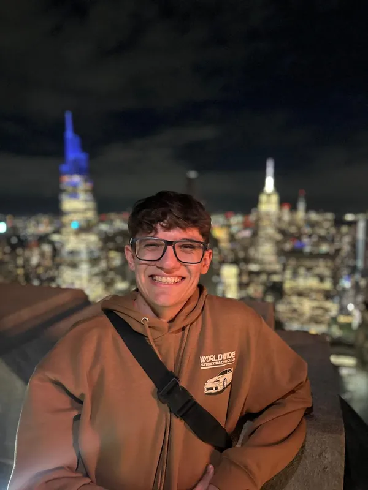

Tomás Berón
UX/UI Designer · Buenos Aires Province
For over a year I've been designing digital products full-time and remotely for international clients: websites, icon systems, design systems and campaign assets.
My full stack training lets me speak the same language as the dev team and deliver feasible designs from day one.
Contact me